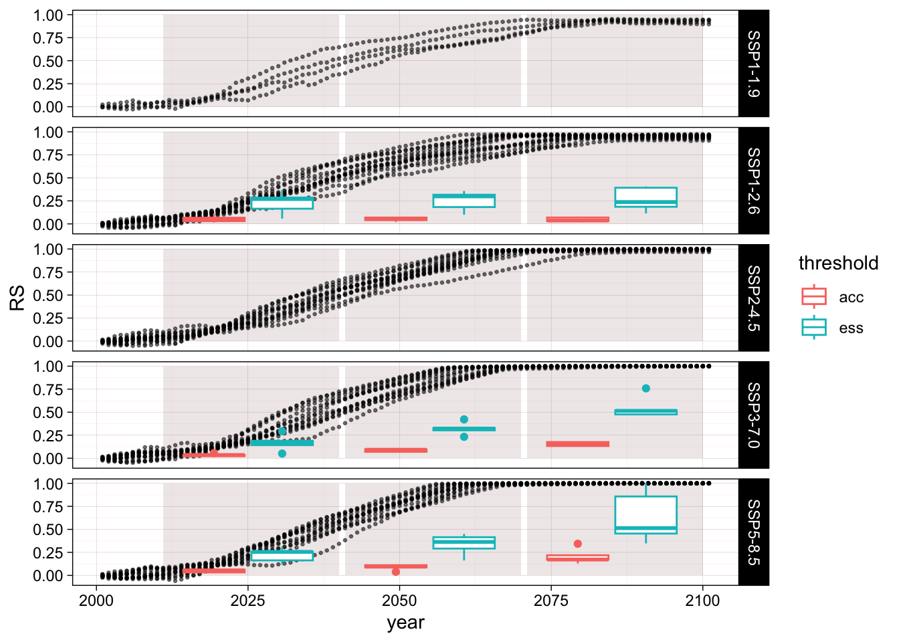
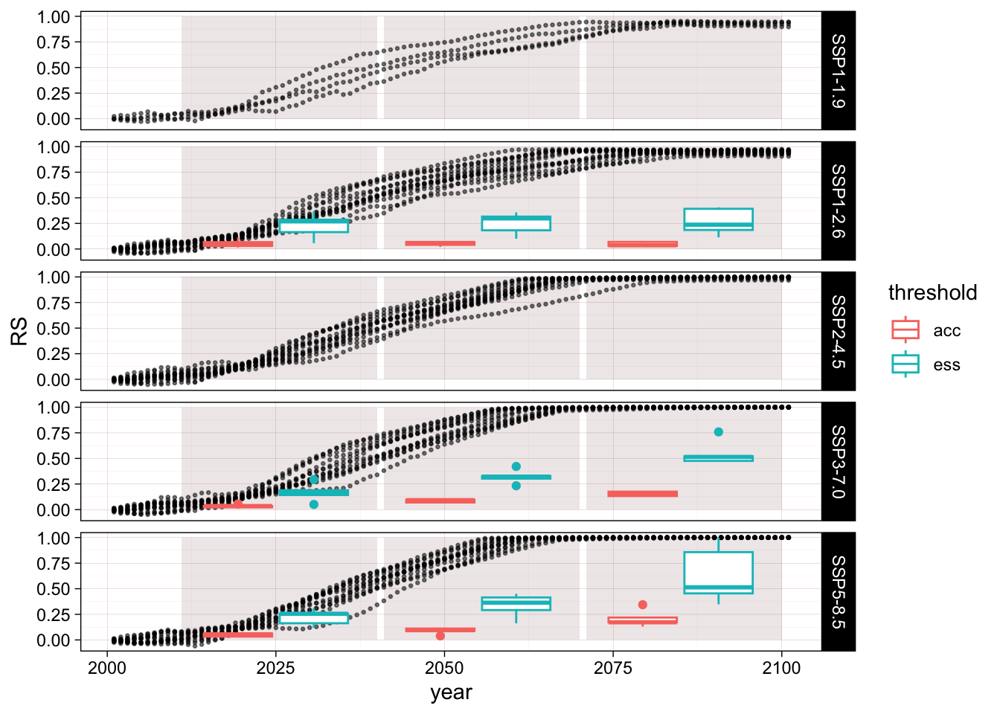

Warning: Removed 808 rows containing missing values (`geom_point()`).
Tropical Glacier Ecosystem of Kilimanjaro
https://en.wikipedia.org/wiki/Mount_Kilimanjaro https://en.wikipedia.org/wiki/Rwenzori_Mountains
Now we can calculate the relative severity per year estimated from the mass balance model and compare this value with the relative severity estimated from the suitability model.
Warning: Removed 808 rows containing missing values (`geom_point()`).
`summarise()` has grouped output by 'ssp', 'threshold', 'timeframe', 'year'.
You can override using the `.groups` argument.Warning: Removed 24 rows containing non-finite values (`stat_boxplot()`).A gradient boosted model with bernoulli loss function.
200 iterations were performed.
There were 19 predictors of which 19 had non-zero influence.gbm variable importance
Overall
bio_05 100.000
bio_09 31.000
bio_01 18.686
bio_15 18.448
bio_10 17.842
bio_08 15.503
bio_18 13.944
bio_12 13.697
bio_04 13.163
bio_13 12.740
bio_03 12.464
bio_06 9.392
bio_02 8.648
bio_19 7.663
bio_07 5.902
bio_16 5.783
bio_14 5.254
bio_17 1.814
bio_11 0.000This is a problem, the cutoff value is very high because the model overfits!
R version 4.3.1 (2023-06-16)
Platform: aarch64-apple-darwin20 (64-bit)
Running under: macOS Sonoma 14.2.1
Matrix products: default
BLAS: /Library/Frameworks/R.framework/Versions/4.3-arm64/Resources/lib/libRblas.0.dylib
LAPACK: /Library/Frameworks/R.framework/Versions/4.3-arm64/Resources/lib/libRlapack.dylib; LAPACK version 3.11.0
locale:
[1] en_US.UTF-8/en_US.UTF-8/en_US.UTF-8/C/en_US.UTF-8/en_US.UTF-8
time zone: Australia/Sydney
tzcode source: internal
attached base packages:
[1] stats graphics grDevices utils datasets methods base
other attached packages:
[1] ggpubr_0.6.0 readr_2.1.4 gbm_2.1.8.1 caret_6.0-94 lattice_0.22-5
[6] ggrepel_0.9.4 stringr_1.5.1 units_0.8-5 ggplot2_3.4.4 dplyr_1.1.4
loaded via a namespace (and not attached):
[1] tidyselect_1.2.0 timeDate_4022.108 farver_2.1.1
[4] fastmap_1.1.1 pROC_1.18.5 digest_0.6.33
[7] rpart_4.1.23 timechange_0.2.0 lifecycle_1.0.4
[10] survival_3.5-7 magrittr_2.0.3 compiler_4.3.1
[13] rlang_1.1.2 tools_4.3.1 utf8_1.2.4
[16] yaml_2.3.8 data.table_1.14.10 knitr_1.45
[19] ggsignif_0.6.4 labeling_0.4.3 htmlwidgets_1.6.4
[22] bit_4.0.5 here_1.0.1 plyr_1.8.9
[25] abind_1.4-5 withr_2.5.2 purrr_1.0.2
[28] nnet_7.3-19 grid_4.3.1 stats4_4.3.1
[31] fansi_1.0.6 colorspace_2.1-0 future_1.33.0
[34] globals_0.16.2 scales_1.3.0 iterators_1.0.14
[37] MASS_7.3-60 cli_3.6.2 crayon_1.5.2
[40] rmarkdown_2.25 generics_0.1.3 rstudioapi_0.15.0
[43] future.apply_1.11.0 reshape2_1.4.4 tzdb_0.4.0
[46] splines_4.3.1 parallel_4.3.1 vctrs_0.6.5
[49] hardhat_1.3.0 Matrix_1.6-4 carData_3.0-5
[52] jsonlite_1.8.8 car_3.1-2 hms_1.1.3
[55] bit64_4.0.5 rstatix_0.7.2 listenv_0.9.0
[58] foreach_1.5.2 gower_1.0.1 tidyr_1.3.0
[61] recipes_1.0.8 glue_1.6.2 parallelly_1.36.0
[64] codetools_0.2-19 cowplot_1.1.1 lubridate_1.9.3
[67] stringi_1.8.3 gtable_0.3.4 munsell_0.5.0
[70] tibble_3.2.1 pillar_1.9.0 htmltools_0.5.7
[73] ipred_0.9-14 lava_1.7.3 R6_2.5.1
[76] rprojroot_2.0.4 vroom_1.6.5 evaluate_0.23
[79] backports_1.4.1 broom_1.0.5 class_7.3-22
[82] Rcpp_1.0.11 nlme_3.1-164 prodlim_2023.08.28
[85] xfun_0.41 pkgconfig_2.0.3 ModelMetrics_1.2.2.2